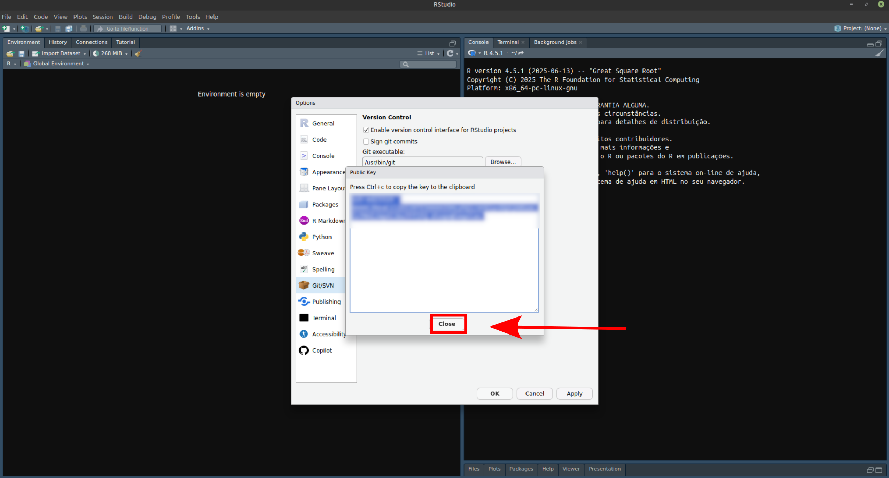

%%{init: {'themeVariables': {'fontSize': '42px'}, 'flowchart': {'nodeSpacing': 42, 'rankSpacing': 42}}}%%
flowchart LR
A["Criar repositório<br/>no GitHub"] --> B["Clonar o repositório<br/>localmente"]
B --> C["Criar estrutura<br/>de pasta"]
C --> D["Criar e salvar<br/>os scripts"]
D --> E["Commit"]
E --> F["Push"]
classDef step fill:#e8f1ff,stroke:#6b8fd6,rx:10,ry:10;
class A,B,C,D,E,F step;
Fluxo de Trabalho Reprodutível com Dados Ecológicos em R
Dia 02 — Teoria (Módulo 2: Versionamento de Código)
Diogo S. B. Rocha, Hernani Ramos
2025-02-08
Bem-vindos — Dia 02 (Teoria)
Módulo 2 – Versionamento de código
- Introdução a Git e GitHub
- Fluxo básico de commits, branches, pull/push
- Organização de repositórios acadêmicos
Objetivos do dia
- Entender por que versionar código e dados derivados.
- Compreender conceitos-chave de Git (repo, commit, branch, merge, remoto).
- Dominar o fluxo básico local e remoto (GitHub).
- Conhecer boas práticas para repositórios acadêmicos (README, .gitignore, licença, citação).
Por que versionar?
- Histórico completo do desenvolvimento (quem, quando, por quê).
- Reprodutibilidade e colaboração sem sobrescrever arquivos.
- Segurança contra perda de trabalho.
- Facilita revisão por pares e integração.
Sem versionamento: “final_versão_final_última(2).Rmd”
Com Git: “02_pca.R”
- Usar commits com mensagem clara.
Git vs GitHub
Git: sistema de controle de versão (local).

GitHub (ou GitLab/Bitbucket): plataforma para hospedar repositórios, colaboração e revisão.


Glossário
- Repositório: diretório versionado.
- Commit: “foto” do estado dos arquivos + mensagem.
- Branch: linha de desenvolvimento.
- Merge: integrar branches.
Repositório: diretório versionado

Commit: “foto” do estado dos arquivos + mensagem

Branch: linha de desenvolvimento
Merge: integrar branches

Instalação & configuração (primeiros passos)
Autenticação GitHub: use SSH para
push/pull.
SSH (Secure Shell)
- Protocolo para acesso remoto seguro em redes não confiáveis
- Usa criptografia para autenticar cliente/servidor e proteger os dados
- Método de autenticação sem senha: você gera um par privada/pública
- Vantagem: seguro e sem digitar senha/token toda hora
Configuração GitHub e Rstudio
Configuração GitHub e Rstudio
Configuração GitHub e Rstudio
Configuração GitHub e Rstudio
Configuração GitHub e Rstudio
Configuração GitHub e Rstudio
Configuração GitHub e Rstudio
Configuração GitHub e Rstudio

Configuração GitHub e Rstudio
Configuração GitHub e Rstudio
Configuração GitHub e Rstudio
Configuração GitHub e Rstudio
Identidade (apenas 1x na máquina)

Fluxo local básico
- Criar repositório no github
- Clonar o repositório localmente
- Criar estrutura de pasta
- Criar e salvar os scripts
- Add e commit
- Push
Fluxo local básico
# criar repo novo em github.com
git clone git@github.com:SeuUsuario/NomeRepositorio.git
git status
# adicionar arquivos e commitar
git add scripts/SeuScript.R
git commit -m "tarefa do script"
# enviar ao repositorio na nuvem
git pushBoas mensagens de commit (curtas e claras):
feat: adiciona script 01_importar.R
fix: corrige leitura de CSV com ;
docs: atualiza README com estrutura
Fluxos de trabalho com Git
Inicial
Diário
%%{init: {'themeVariables': {'fontSize': '42px'}, 'flowchart': {'nodeSpacing': 42, 'rankSpacing': 42}}}%%
flowchart LR
A[Pull] --> B[Edições]
B --> C[Commit]
C --> D[Edições]
D --> E[Commit]
E --> F[Push]
classDef step fill:#e8f1ff,stroke:#6b8fd6,rx:10,ry:10;
class A,B,C,D,E,F step;
Organização de repositórios acadêmicos (estrutura)
- README.md (objetivo, como rodar, estrutura, dependências).
- LICENSE (código: MIT/Apache; dados: CC-BY).
- .gitignore (não versionar brutos/sigilosos/temporários).
- docs/ (relatos, dicionário de dados).
- R/ (scripts), data_raw/, data/, outputs/.
Dado bruto: não versionar dados pesados/sensíveis; considerar LFS para arquivos grandes (>= 50 MB).
.gitignore (exemplo para R/RStudio)
# R/RStudio
.Rhistory
.RData
.Rproj.user/
.Ruserdata
# Projeto
data_raw/
outputs/
*.rds
*.tmp
# SO
.DS_Store
Thumbs.dbMantenha fora do repo: chaves, senhas, tokens (use variáveis de ambiente/local
.Renviron).
Padrões de colaboração
- Nome de branches:
feature/...,fix/...,docs/...
- Commits curtos e mensagens descritivas
- Branches protegidas (ex.:
mainexige PR)
- Issues para tarefas/bugs
- Releases e tags (
v0.1.0) para versões citáveis
Padrões de colaboração
Nome de branches
Prefixos de commit - Convenção (inspirada em Conventional Commits)
feat:nova funcionalidadefix:correção de bugdocs:mudança só em documentação (Outros comuns:refactor:,test:,chore:)
Padrões de colaboração
Commits atômicos
são commits que representam uma única mudança lógica, pequena e completa. Eles devem ser fáceis de entender, revisar e reverter sem efeitos colaterais.
Por que fazer?
- revisão e code review mais rápidos
- histórico claro (“o que mudou e por quê”)
- facilitar
git revertde um problema específico - menos conflitos em merge
Padrões de colaboração
Commits atômicos
Como reconhecer?
- o commit responde a uma pergunta: “o que este commit faz?”
- não mistura coisas diferentes (ex.: refatoração + nova feature + formatação)
Regra prática (checklist):
- Uma finalidade (feature ou fix ou docs, etc.)
- Inclui tudo que torna a mudança executável/testável (código + teste + doc, se aplicável)
- Mensagem clara no imperativo e curta na 1ª linha
Padrões de colaboração
Exemplos bons (atômicos):
feat: adiciona leitura de CSV com ;fix: corrige parse de datas dd/mm/yyyydocs: explica estrutura de pastas no README
Exemplos ruins (não atômicos):
update(vago)mexe em várias coisas(múltiplas mudanças sem relação)ajustes finais(sem contexto)
Anti-padrões comuns (evite)
- Commits “update”, “final”, sem contexto
- Empurrar ao
mainsem PR (em equipe)
- Versionar dados brutos sensíveis ou arquivos muito pesados
- Subir chaves/tokens no repo (risco grave)
- Pastas caóticas sem README/LICENÇA
Git no Rstudio

Git no Rstudio
Cheatsheet (resumo de comandos)
Configuration:
git config --global user.name "[your name]" # Sets the name for commits
git config --global user.email "[your email]" # Sets the email for commits
git config --global color.ui auto # Enables helpful colorization in the terminal
Starting a Project:
git init [project-name] # Creates a new local repository
git clone <url> # Downloads an existing project from a remote repository
Making Changes:
git status # Shows the status of your working directory
git add [file] # Stages a specific file for commit
git add . # Stages all changes in the current directory
git commit -m "[message]" # Saves staged changes to the local repository
git rm [file] # Removes a file from the working directory and stages the removal
git mv [old-path] [new-path] # Renames or moves a file and stages the change
Branching and Merging:
git branch # Lists all local branches
git branch [branch-name] # Creates a new branch
git checkout [branch-name] # Switches to an existing branch
git checkout -b [new-branch] # Creates and switches to a new branch
git merge [branch-name] # Merges a specified branch into the current branch
git branch -d [branch-name] # Deletes a local branch (if merged)
Remote Repositories:
git remote add [alias] [url] # Adds a remote repository
git fetch [alias] # Downloads changes from the remote repository
git pull # Fetches and merges changes from the tracking remote branch
git push [alias] [branch] # Uploads local branch commits to the remote
Inspecting History:
git log # Shows the commit history
git log --oneline # Shows a concise commit history
git diff # Shows unstaged changes
git diff --staged # Shows staged changes
Undoing Changes:
git reset [file] # Unstages a file
git checkout -- [file] # Discards changes in the working directory for a specific file
git revert [commit-hash] # Creates a new commit that undoes a previous commit
git reset --hard [commit-hash] # Resets the current branch to a specific commit, discarding all subsequent changes (use with caution)
Stashing:
git stash # Saves modified and staged changes temporarily
git stash list # Lists stashed changes
git stash pop # Applies the most recent stash and removes it from the stash list
git stash drop # Discards the most recent stashCheatsheet (essencial)
# 0) Configuração (uma vez na máquina)
git config --global user.name "Seu Nome"
git config --global user.email "voce@dominio"
# 1) Começar
git init # iniciar repo NA pasta atual
git clone <url> # clonar repo existente
# 2) Loop diário (editar -> adicionar -> commitar)
git status
git add <arquivo> # ou: git add .
git commit -m "mensagem clara"
# 3) Branches
git branch # listar
git checkout -b feature/x # criar e trocar
git checkout main # voltar pra main
git merge feature/x # mesclar na branch atual
# 4) Remoto (GitHub)
git remote add origin <url>
git push -u origin main # primeiro push (configura upstream)
git pull # trazer mudanças do remoto
# 5) Ver histórico e diferenças
git log --oneline --graph
git diff # o que mudou (não indexado)
git diff --staged # o que será commitado
# 6) Desfazer com segurança
git restore --staged <arq> # tirar do stage
git restore <arq> # descartar alterações no arquivo
git revert <hash> # criar commit que desfaz outro (seguro)Resumo do Dia 2 — Teoria
- Git ≠ GitHub; controle local + colaboração remota.
- Fluxo básico: add → commit → push/pull; branches → PR → merge.
- Repositórios acadêmicos: README, .gitignore, LICENSE.
- Evitar dados sensíveis/pesados, commits ruins e desorganização.
Dúvidas?
- Perguntas e exemplos do seu contexto?
- À tarde: prática — init/clone, branches, PR simulado, e repositório com estrutura acadêmica.